<ion-header>

</ion-header>

<ion-content class="bloco-principal">

  <div class="div-imagem-nutrisim"></div>
  
  <div class="div-login">
    <button ion-button color="light" outline class="botao-tela" (click)="efetuarLogin()" >Login</button>
    <button ion-button class="botao-tela" (click)="cadastro()">Cadastre-se</button>
    
  </div>
</ion-content>
